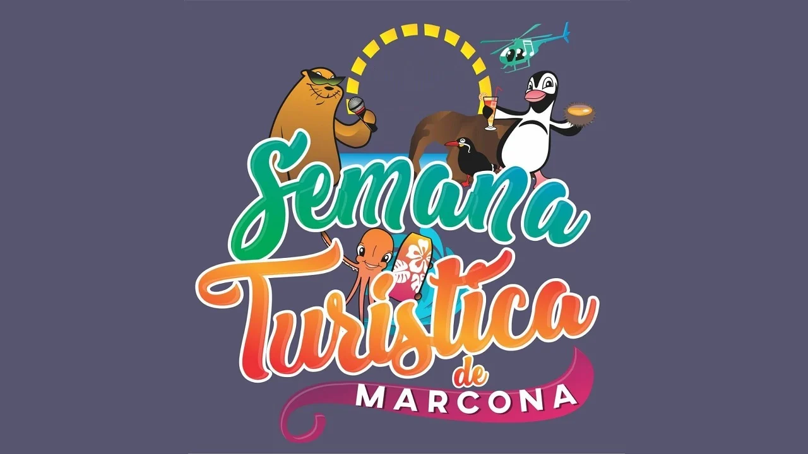

Marcona es una ciudad minera y portuaria peruana capital del distrito homónimo ubicado en la provincia de Nazca en el departamento de Ica. Es la primera en producción de mineral de hierro en el país por lo que conocida como "Capital del hierro" y "Cuna del pingüino de Humboldt" por la abundancia de esta especie en sus costas. Sus principales industrias son la minería, el comercio y la pesca artesanal. Su puerto es llamado San Juan de Marcona.
Haz click en esta imagen para ver el cronograma 👇
